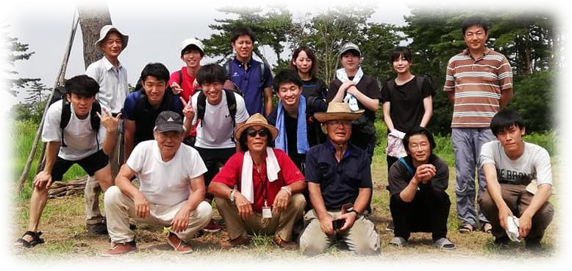
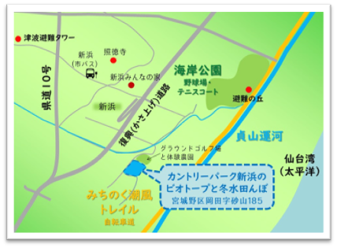

団体について
平成30年5月に、地元の農家と大学教員の6名により発足し、宮城県仙台市宮城野区岡田字砂山の集団移転跡地0.87haに、ビオトープと冬水田んぼ”をつくりました。
自然観察会や、環境にやさしい米作りを通して新たな交流を生み出し、市民が海や運河、海岸林などの自然にふれあうことができる魅力的なゾーンとして再生をめざしています。
また、新浜町内会、宮城教育大学、東北学院大学、貞山運河倶楽部、南蒲生/砂浜エコトーンモニタリングネットワーク、遠藤環境農園らとも連携し、地域に残る海辺で暮らしの知恵などが体験できる学習会、市有林や海浜植物の育苗にも取り組んでいます。

周辺MAP
